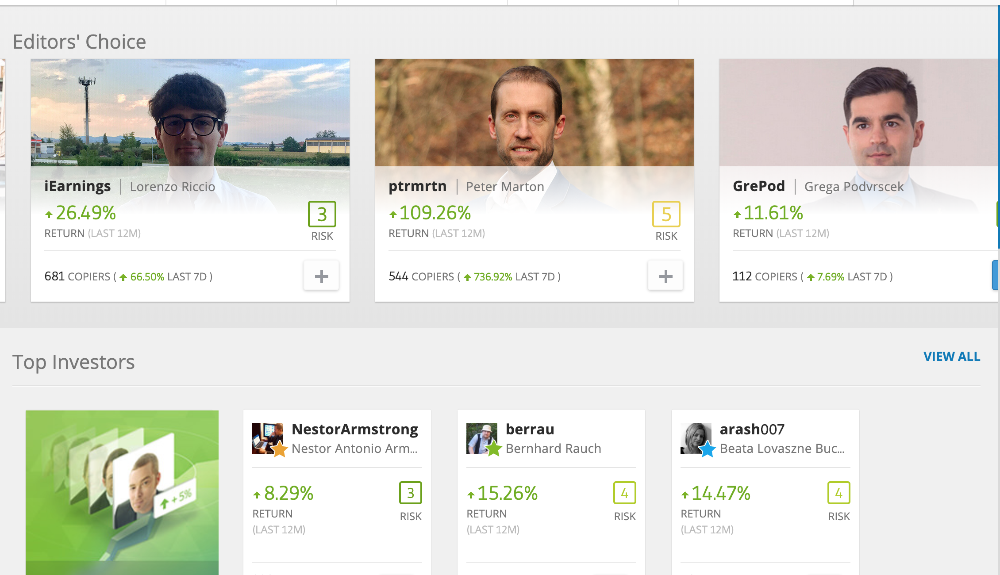
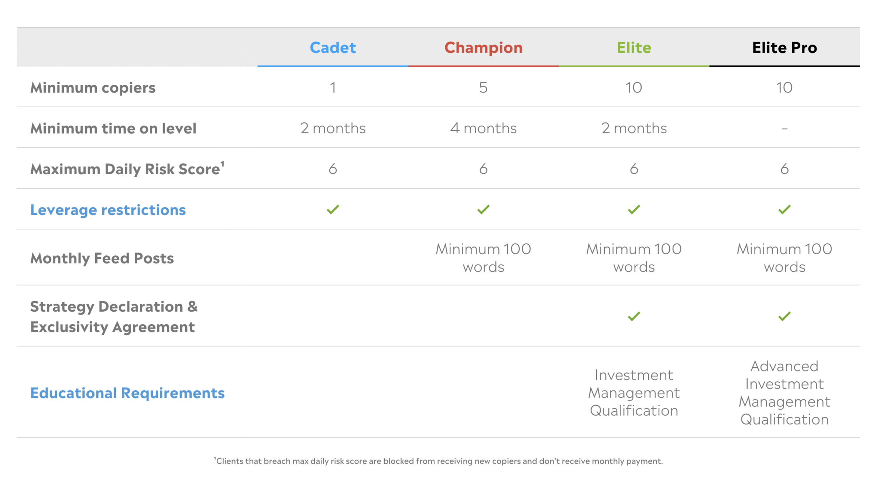
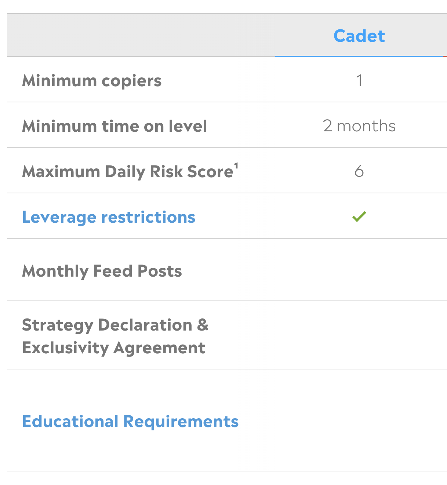
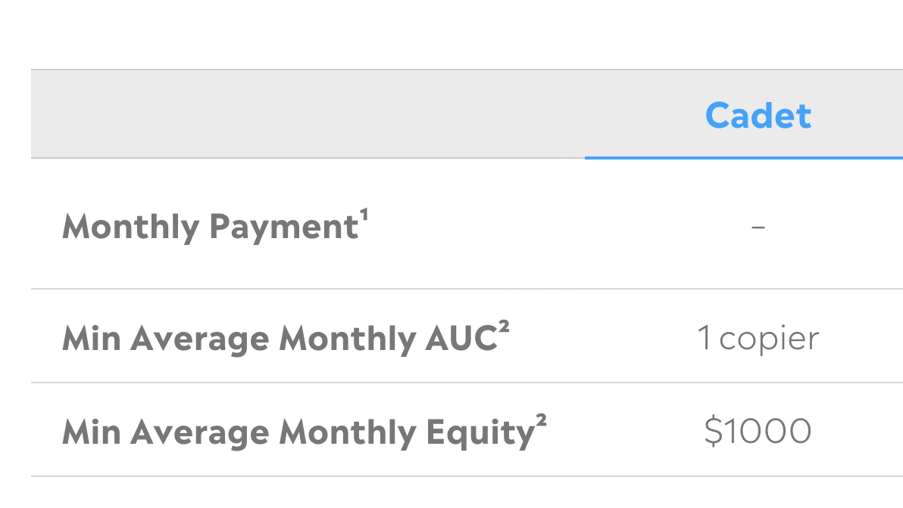
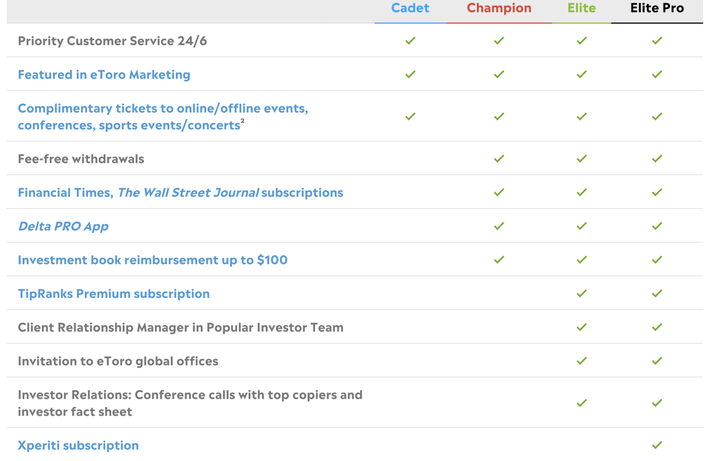
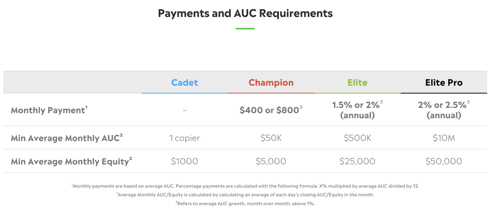
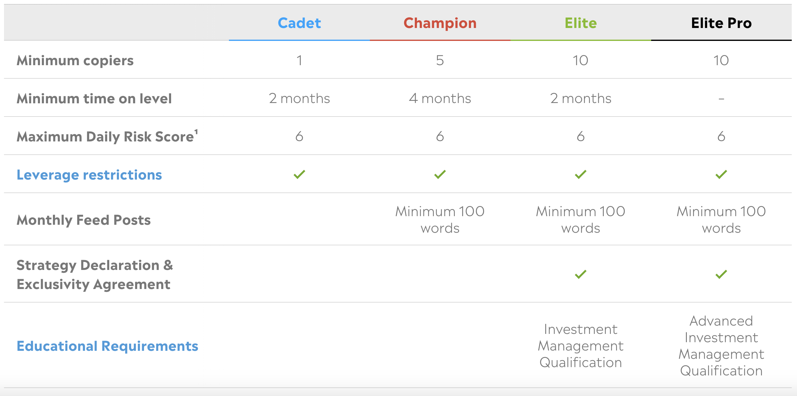

الاشخاص الذين ننسخهم على eToro يُطلق عليهم "Popular Investors". هم المستثمرون ذوو الخبرة الذين ننسخ صفقاتهم تلقائيا من خلال ميزة نسخ التداول في eToro. لكن ما الفائدة التي يحصلون عليها — وهل يمكنك ان تصبح واحدا منهم؟
ما هو Popular Investor على eToro؟
Popular Investor على eToro هو احد الاشخاص الذين يمكنك نسخ صفقاتهم على المنصة. احد ابرز مميزات eToro هي ميزة نسخ التداول — تتيح لك نسخ جميع صفقات المستثمرين الاكثر خبرة تلقائيا. مستثمرو Popular Investor هم الاشخاص الذين يجعلون ذلك ممكنا.


كيف يتقاضى مستثمرو Popular Investor؟
يكسبون المال مباشرة من eToro — العملاء لا يدفعون لهم، eToro تدفع. كلما زاد عدد الاشخاص الذين ينسخونك وزاد المال الذي يستخدمونه لنسخك، زادت ارباحك. إنه نظام حوافز قائم على الاداء.
هل تحتاج ان تكون محترفا؟
لا. لا تحتاج ان تكون مستثمرا محترفا مدربا او ان تمتلك اي مؤهلات مالية — لا شهادات ولا درجات علمية مطلوبة. فقط سجل تداول ثابت. سيتحقق مستخدمو eToro من صفحة احصائياتك — إذا اعجبهم ما يرونه، سينسخونك. بهذه البساطة.
المستويات الاربعة لـ Popular Investor
انشأت eToro 4 مستويات او "فئات" مختلفة. كلما حصلت على المزيد من الناسخين وزاد المال الذي ينسخك، يمكنك الصعود عبر هذه المستويات. مع الصعود، تتحسن المزايا والمدفوعات. المتطلبات مختلفة في كل مستوى — ستحتاج المزيد من الاشخاص الذين ينسخونك والمزيد من المال الإجمالي المستخدم لنسخك. ستحتاج ايضا الى الالتزام بـ "إرشادات التداول المسؤول" من eToro في كل مستوى.

المستوى 1 — 'Cadet' (النجمة الزرقاء)
المستوى الاول هو 'Cadet'. هنا يبدأ الجميع. المتطلبات تشمل:

- درجة المخاطرة الخاصة بك لا يمكن ان تتجاوز 6 من 10
- يجب ان تلتزم بسياسة التداول المسؤول وقيود الرافعة المالية في eToro
- تحتاج الى ناسخ واحد "مُتحقق منه" على الاقل (الشخص الذي ينسخك يجب ان يكون قد تحقق من حسابه بالكامل على eToro — ولا يمكن ان يكون فردا من العائلة)
- تحتاج الى 1,000 دولار على الاقل من الاصول تحت الحفظ (AUC) — المبلغ الإجمالي المستخدم لنسخ صفقاتك
- يجب ان تبقى في مستوى Cadet لمدة شهرين على الاقل قبل التقدم
في مستوى Cadet لا توجد مدفوعات شهرية، لكنها الخطوة الاولى المهمة على السلم.
المستوى 2 — 'Champion' (النجمة الحمراء)
في مستوى Champion ستحصل على مدفوعات شهرية مباشرة من eToro، وسحوبات بدون رسوم، وستظهر شارة نجمتك الحمراء على ملفك الشخصي. ستحتاج للبقاء في هذا المستوى لمدة 4 اشهر على الاقل قبل ان تتمكن من التقدم.


المستوى 3 — 'Elite' (النجمة الخضراء)
في مستوى Elite، يصبح الدفع الشهري نسبة مئوية بناء على إجمالي AUC الخاص بك. ستحتاج ايضا للبقاء في Elite لمدة شهرين على الاقل قبل التقدم الى المستوى الاعلى.


المستوى 4 — 'Elite Pro' (النجمة السوداء)
النجمة السوداء تعني انك وصلت الى اعلى مستوى من Popular Investor على eToro. هنا يمكن ان تصبح الامور مربحة جدا.
حصة الاصول تحت الحفظ
في مستويي Elite وElite Pro، تحصل على ما بين 1.5% و2.5% من AUC السنوي الخاص بك، يُدفع شهريا. للتوضيح:
- 5,000,000 دولار AUC × 2% = 100,000 دولار سنويا
- مقسومة على 12 شهرا = حوالي 8,333 دولار شهريا
بعض مستثمري Popular Investor لديهم اكثر بكثير من 5 ملايين دولار AUC — يمكن ان يصبح الامر مربحا للغاية. لكن الوصول الى هناك يتطلب اداء حقيقيا ومتسقا على مدى فترة طويلة.
eToro Editor's Choice
في اعلى صفحة "نسخ الاشخاص"، تبرز eToro بانتظام مستثمرين مختلفين تعتقد ان المجتمع قد يكون مهتما بهم. الظهور في هذا القسم غالبا ما يدفع Popular Investor الى دائرة الضوء — يمكن ان يزداد عدد الناسخين بشكل كبير لفترة. لكن الاحتفاظ بهؤلاء الناسخين الجدد يعتمد كليا على الاداء المستمر.
ما مدى صعوبة الوصول الى Elite Pro؟
ليس سهلا. يجب ان تكون احصائياتك جذابة من حيث المخاطرة والربحية. إذا كنت تؤدي بشكل جيد باستمرار، سيجدك الناس. يبدو انه يكتسب زخما — كلما زاد عدد الناسخين لديك، اصبحت اكثر وضوحا، والوضوح يجلب المزيد من الناسخين. اداؤك هو كل شيء.